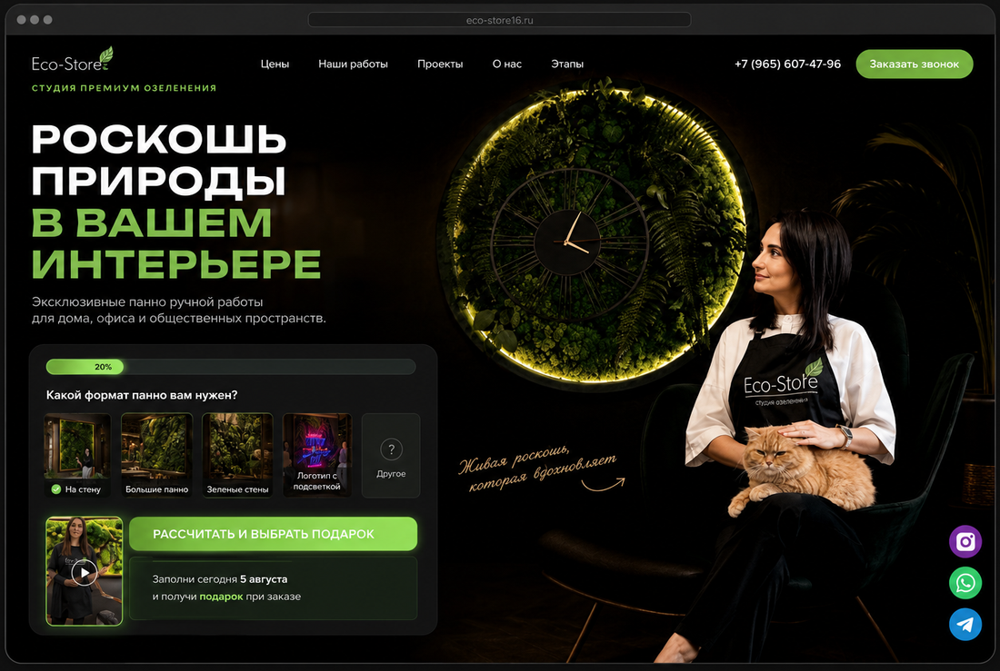
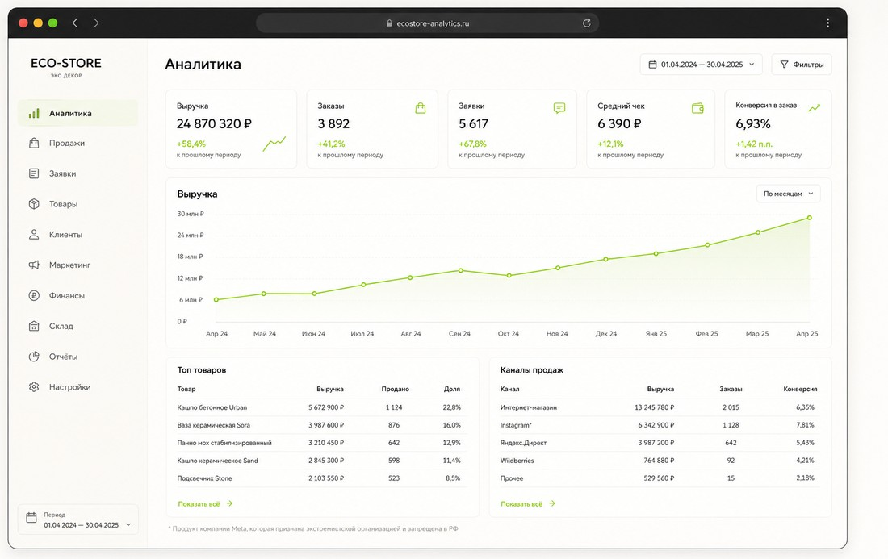
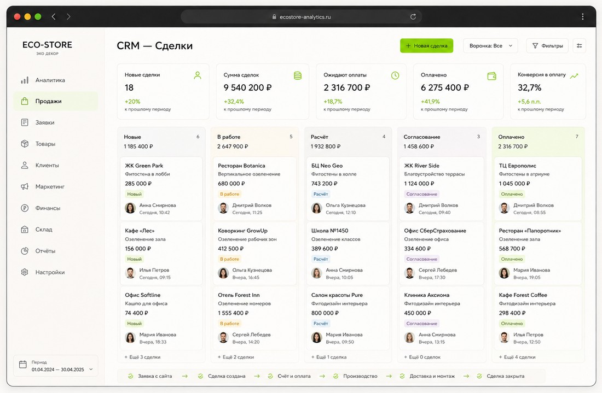
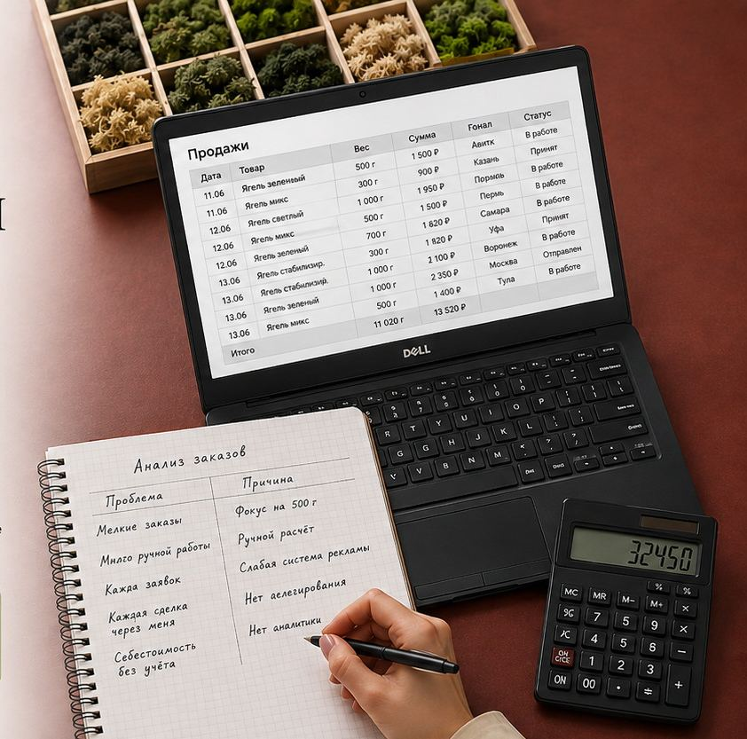
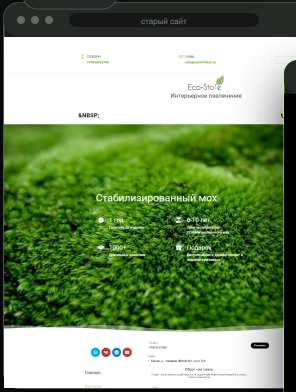
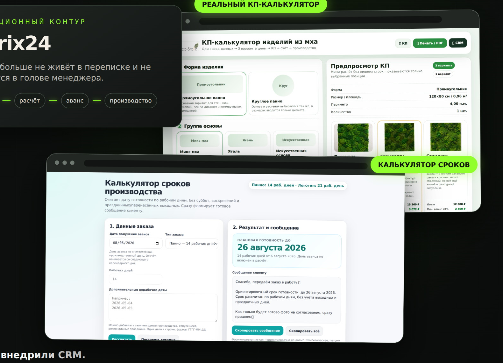
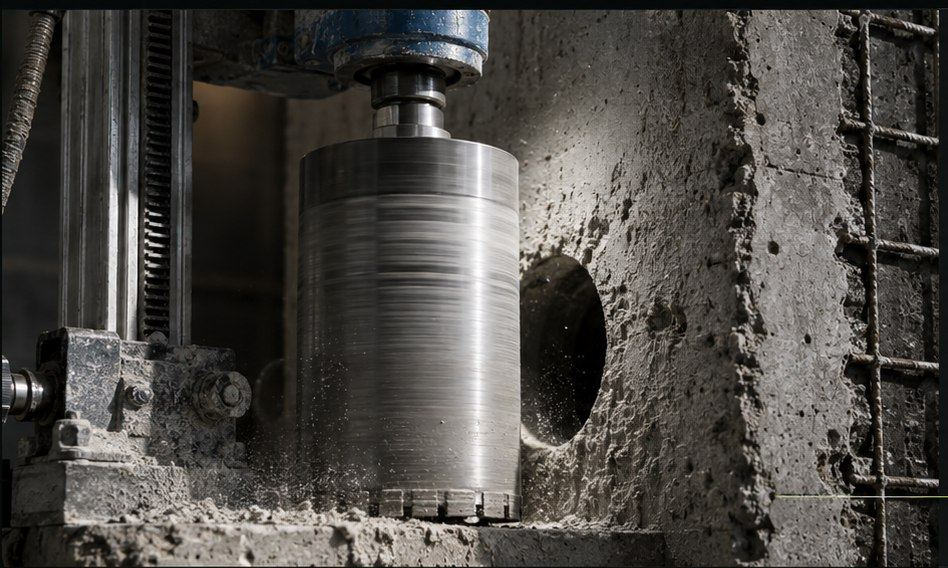
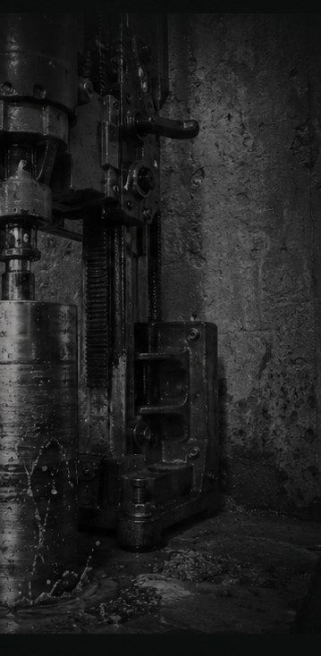

600 тыс. →1,2 млн ₽рабочий месячный оборот



Полноценный кейс
Вместо тысяч кейсов с недоказанными результатами и вымышленными цифрами — один полноценный кейс. В нём мы берём на себя максимальную часть маркетинга и операционной системы, а собственнику остаётся качественно выполнять свои услуги.



01 / Анализ
Я вошла в продажи и разобрала
весь путь заказа изнутри

02 / Упаковка
После анализа пересобрала продукт и создала новый продающий лендинг.
29,7 тыс. ₽ → 42,9 тыс. ₽

03 / Трафик
После перезапуска сайта, обновления предложения и настройки рекламы оборот вырос до 1 606 635 ₽.
04 / Система
Заявка больше не живёт в переписке и не держится в голове менеджера.

Ещё один кейс
Не всегда нужен полный операционный цикл. Здесь мы взяли на себя только рекламу и трафик — и сделали стоимость обращения предсказуемой и управляемой.
Кейс · Алмазное бурение
Пересобрали сайт, аналитику и рекламные кампании — и вывели компанию на максимальный объём трафика в сезон.
Смотреть кейс →

Было
Цель
Пересобрали основу
Реклама начала работать не сама по себе, а как часть понятной системы привлечения.
Закрепили экономику
Сначала добились нужной стоимости обращения — и только после этого начали увеличивать объём.
Точка Б
Реклама перестала быть экспериментом и стала управляемым источником заказов.